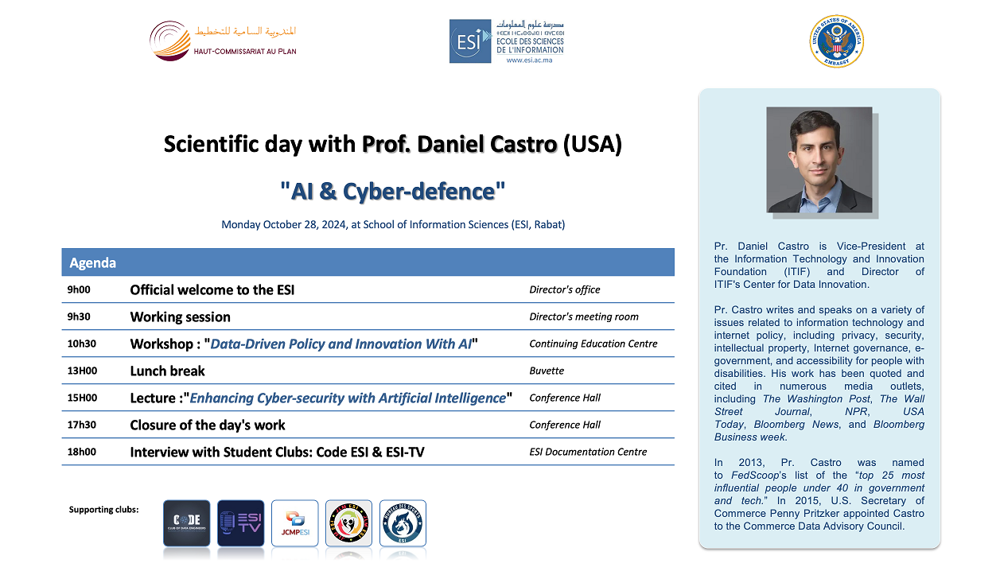
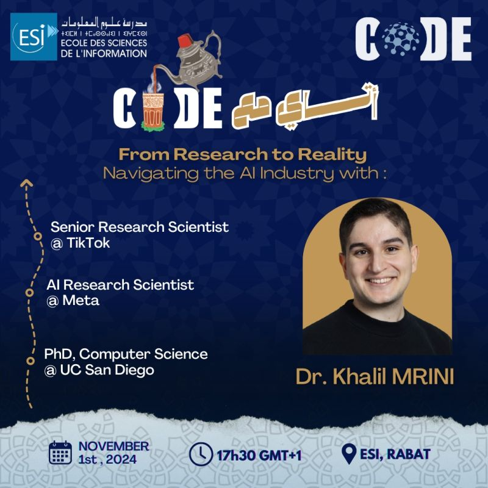

Concert caritatif – Unissons-nous pour la solidarité
Une soirée musicale exceptionnelle où l’art se met au service du partage ! Date : Jeudi 6 février Heure : 18h00 Lieu : École des Sciences de l’Information
Cérémonie de remise des diplômes aux lauréats de l’ESI (Promotion 2024 – Cycle Ingénieur et Cycle Master)

Célébration solennelle de l'accomplissement académique des diplômés de l'ESI, récompensant leurs années d'efforts et d'engagement dans les cycles d'ingénieur et de master.
Scientific day with Prof. Daniel CASTRO about “AI & CYBER-DEFENSE”
Scientific day with Prof. Daniel CASTRO, Vice-President at the Information Technology and Innovation Foundation (ITIF) and director of ITIF’s Center for Data Innovation.
Atay m3a Code! Dr Khalil Mrini
Bienvenue dans le tout premier épisode d'Atay m3a Code ! Cette série est dédiée à partager des histoires, des idées et une passion pour la technologie autour d'un délicieux kass d’Atay. À chaque session, nous vous rapprochons de personnalités remarquables du secteur technologique, explorant leurs parcours et suscitant ensemble de nouvelles idées. Pour commencer notre série en beauté, nous accueillons le Dr Khalil MRINI, expert en NLP et en IA générative, ainsi que chercheur senior chez TikTok.